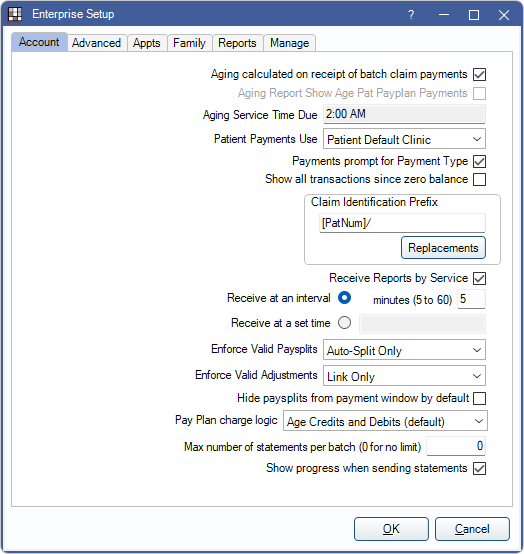
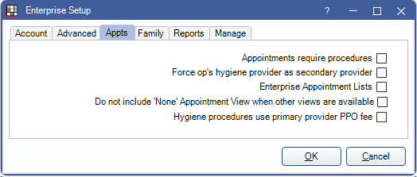
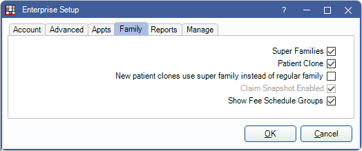
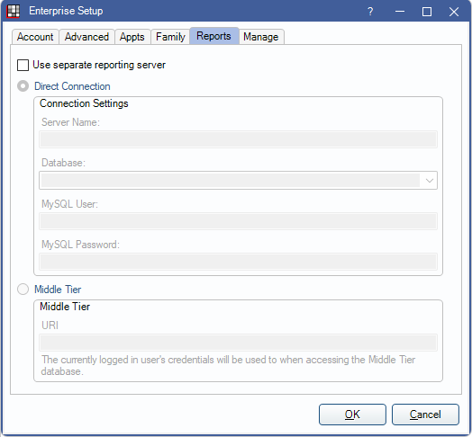

Enterprise Setup
Determine Enterprise settings in Enterprise Setup.
In the Main Menu, click Setup, Enterprise.
Many of these settings appear in other locations in Open Dental, but changes in either place reflect globally. Enterprise Setup must be enabled in Show Features.
Account Tab
Aging calculated on receipt of batch claim payments: Determines whether aging is run after entering a Batch Insurance Payment or Processing an ERA.
- Run aging after entering a batch insurance payment or processing an ERA. Only updates family balances of patients associated to the insurance payments. Useful for keeping patient balances current if entering claim payments after generating the billing list.
- Do not run aging after entering batch insurance payments or processing an ERA.
Aging Report Show Age Pat Payplan Payments: If enabled, a checkbox is added to the Custom Aging Report window to age patient payments to Payment Plans.
Aging Service Time Due: Time of day aging is calculated. Aging will run during a block of time starting at the time set. Open Dental Service must be installed and running on the server to run aging at the scheduled time.
Patient Payments Use: Determines the default clinic for patient payments (Payment window). There are three options.
- SelectedClinic: Use the clinic selected in the main menu under Clinics.
- PatientDefaultClinic: Use the patient's default clinic as set on the Edit Patient Information. If the patient's clinic is Unassigned, the default clinic is None.
- SelectedExceptHQ: Use the clinic selected in the main menu, unless it is Headquarters. In that case, use the patient's clinic.
Payments prompt for Payment Type: Determines whether or not a Payment Type is automatically selected when entering a patient payment.
- Checked: Users must manually select the Payment Type when entering a payment (no default selected).
- Unchecked (default): The first Payment Type in the list is selected by default.
Show all transactions since zero balance: Check to include all transactions since the last zero balance for statements generated from Billing.
Claim Identification Prefix: Change the default format of the claim ID. This number is assigned to a claim using the prefix selected, then adding an auto-generated claim number. Useful for internal tracking of claims. Click Replacements to select a prefix.
Receive Reports by Service: Determines the method used to receive clearinghouse reports.
- Unchecked: The specified computer receives the reports. This is the original method used by Open Dental.
- Checked: Receive reports using the OpenDentalService (see Service Manager). This method is recommended for remote app users.
Receive at an Interval: Set a time interval, in minutes, to automatically check the clearinghouse server and download new reports. Only values between 5 and 60 are allowed. 30 is the default.
Receive at a set time: Set a specific time to check the clearinghouse server and download new reports. Time auto-corrects itself to valid format (e.g.s 1:00 AM)
Enforce Valid Paysplits: Determines whether or not users are forced to allocate patient payments to procedures and unearned income. Also sets Paysplits setting in Allocations Setup.
- Enforce Fully: (Rigorous in Allocations Setup) Open Dental automatically suggests payment splits (paysplits) allocated to procedures, procedure treating provider, default clinic, and default unearned income types. Users can modify suggested paysplits, but are required to allocate to production (procedures or adjustments) or an unearned income type. Pay Plan Credits are also required to be attached to procedures.
- Auto-Split Only: Open Dental automatically suggest paysplits allocated to procedure treating provider, default clinic, and default unearned income types, but user can modify splits or choose to remove allocations to procedures or unearned income types.
- Don't Enforce: (Manual in Allocations Setup) Paysplits must be manually created and may optionally be allocated to production or unearned income. If no paysplits are added, a single, unallocated paysplit is automatically created when the payment is posted to the account. The provider assigned to the paysplit defaults to the patients' primary provider and the Clinic is determined by Default Clinic for patient payments set in Preferences, which may differ from the Clinic and provider of outstanding charges.
Enforce Valid Adjustments: Determines whether clinic and provider of adjustments match clinic and provider of attached procedures. Also determines whether attaching adjustments to procedures is required or optional. Setting only applies when creating new adjustments or editing existing adjustments. Also sets Adjustments setting in Allocation Setup.
- Enforce Fully: (Rigorous in Allocations Setup) Attaching procedures to adjustments is required. Clinic and provider assigned are the same as procedure. Users with the Setup security permission may edit the adjustment to assign a different clinic and provider than the attached procedure.
- Link Only: Clinic and provider assigned are the same as procedure. Users may edit the adjustment to assign a different clinic and provider than the attached procedure.
- Don't Enforce: (Manual in Allocations Setup) The patient's default clinic and provider are assigned to the adjustment. Users may edit the adjustment to assign to the same clinic and provider as the procedure.
Hide paysplits from payment window by default:
- Checked: Current Payment Splits and Outstanding Charges are hidden by default when the Payment window is opened.
- Unchecked: Current Payment Splits and Outstanding Charges show by default when the Payment window is opened.
Pay Plan charge logic: Determines how charges and credits for Patient Payment Plans show in the patient account ledger and whether they affect balances, aging, and reports.
- Do Not Age (Legacy): Payment plan debits (amounts due) and payments only show within the payment plan and do not affect balance or aging.
- Payment plan debits are totaled in the Payment Plans grid under Due Now.
- Payment plan payments do not show in the ledger but in the payment plan. Double-clicking the plan row is the only way to view payment plan payments.
- One payment plan credit (PayPln) shows as a single line item in the patient account grid, reducing the total account balance by the amount. The credit amount is based on the Tx Completed Amt set in the payment plan.
- Other payment plan credits, debits, and payments do not show in the account grid nor do they affect balances or aging.
- The total A/R in the Aging of A/R report does not include payment plan due amounts.
- Only changes to the Tx Completed Amount affect aging and production and income reports.
- Payment plan amounts are not included on the Receivables Breakdown Report.
- Age Credits and Debits (Default): Payment plan debits, credits, and payments show as line items in patient account grid and affect balances and aging.
- Payment plan amounts due (PayPln: Debit) and credits (PayPln: Credit) show as line items in the patient account grid.
- Payment plan payments show in the account grid.
- Payment plan due amounts are included the patient's balance.
- Payment plan amounts due and payments are considered when calculating aging.
- Payment plan credits and debits are included on the Receivables Breakdown report.
- Changes made to historical payment plan charges affect historical information (e.g.. Aging of A/R, Production and Income reports).
- Age Credits Only: Patients are credited for payment plans when the credit comes due, but debits all exist separately from the account ledger.
- Each payment plan credit line item shows in the account grid, sorted by Tx Credit date.
- Payment plan debits only show in the Payment Plan grid. They do not show in the account grid.
- Payment plan amounts due are not considered when calculating balances and aging.
- Payment plan credits and debits are not included on the Receivables Breakdown report.
- Changes made to historical payment plan credits affect historical information (e.g., Aging of A/R, Production and Income reports).
- No Charges to Account (Rarely Used):
- Payment plans have no affect on account balance.
- Payments to payment plans show in ledger and payment plan.
- Payment plan amount is not removed from aging.
- Payment plan amounts are not included on the Receivables Breakdown report.
Max number of statements per batch (0 for no limit): Enter the maximum number of statements that are considered a batch when sending statements via the Billing List. Enter 0 to set no limit. Useful for large offices that send many statements.
Show progress when sending statements: Determines whether or not a progress bar shows when sending statements via the Billing List.
- Checked: A progress bar does show that includes options for pause, resume, cancel.
- Unchecked: A progress bar does not show.
Advanced Tab

Passwords must be strong:
- Checked: All passwords must be at least 8 characters and contain at least one number, one uppercase letter, and one lowercase letter. Note:
- If using Mobile Web and passwords are changed to must be strong, users who do not have a strong password must change passwords to meet the criteria before they can access the Mobile Web. Users who already have a strong password do not need to go through this process.
- When passwords must be strong, a password is required when adding a new user.
- Unchecked. Strong passwords are not required.
Strong passwords require special character:
- Checked: When passwords must be strong, the password must also contain at least one special character (e.g. #, $, !).
- Unchecked: A special character is not required.
Force password change if not strong:
- Checked: When Passwords must be strong is enabled, users who do not have a strong password are required to change their password the next time they log on so it meets criteria.
- Unchecked: Users are not be required or prompted to change to a strong password.
Lock includes administrators: Lock limitation applies to Admin user group. See Security Lock Dates.
Automatic logoff time in minutes (0 to disable): Set the number of minutes before idle users are automatically logged off.
Manually enter log on credentials:
- Checked: Users must type their username and password to log on.
- Unchecked: Username can be selected from a list when logging in.
Global Lock: Global lock dates prevent editing of old items and are the only way to prevent backdating of new items.
- Lock Date: Changes are only allowed if they occur before the date entered.
- Lock Days: Changes are only allowed within a set amount of days from the original entry date.
- Change:
DBM Disable Optimize:
- Checked: The Optimize Database tool is disabled. See Database Maintenance
- Unchecked: The Optimize Database tool is available to use.
DBM Skip Check Table:
- Checked: When using the Database Maintenance tool, table checks are skipped.
- Unchecked: When using the Database Maintenance tool, table integrity is checked.
Clinics (multiple office locations): See Clinics. Must be enabled from Show Features.
Disable signal interval after this many minutes of user inactivity:This setting is designed to limit the load on database from idle users. Enter the minutes of workstation activity that causes Open Dental to stop sending automatic signals to refresh information. Keyboard and mouse activity will cause the view to start refreshing again. If this is set, to keep users viewing the Appointments Module schedule updated, even though signals are not being processed because a workstation is idle, enable the preference, Refresh every 60 Seconds, keep waiting room times refreshed.
If used in conjunction with Auto log off options for Open Dental or Windows (see Global Security Settings), it would be set to a lower value. If Auto Log off is set very low, like two minutes, this Disable signal setting would not be normally be used.
Disabling signals during workstation inactivity can prevent errors due to lack of network access (e.g., if the server is down and comes up again). Once the workstation becomes active (e.g., with a mouse click or mouse movement), the signal resumes at the set intervals (see above). Leave the field blank to prevent to the signal from being disabled during periods of inactivity.
Process signal interval in seconds. Usually every 6 to 20 seconds:The interval, in seconds, that Open Dental automatically refreshes the Appointments Module, Task Lists, and text notifications. Usually the value is 6 to 20 seconds. Leave the field blank to disable auto-refresh. See Refreshing Data.
- If a workstation has a network access issue when it sends a signal, users receive an Unhandled Exception error. We recommend clicking Quit, then restarting Open Dental.
- A value must be entered when using the Kiosk Manager feature.
Patient Select:
- The number of characters entered into the search fields before filling the grid: 1 to 10 characters, try starting with 3. Reduces server load when Selecting a Patient by not requesting results until specified number of characters have been entered.
- The number of milliseconds to wait after a character is entered before filling the grid: Reduces server load when selecting patients by adding a delay before requesting search results as user types.
- Only used when the The number of characters entered into the search fields before filling the grid is >1.
- Only searches once the characters entered are equal to or greater than The number of characters entered into the search fields before filling the grid.
- One to 10,000 milliseconds, try starting with 1500.
- Search and fill grid with all empty search fields: By default, opening Select Patient window populates the grid before any search fields have been entered. Uncheck to reduce sever load by requiring user to click Search before populating the grid if no search terms have been entered.
- Store patient phone numbers in a separate table for patient search: Copy phone numbers from the patient table to the phonenumber table, with non-digit characters stripped out. Useful to speed up the search for large databases.
- Checked: Copy numbers into the phonenumber table.
- Unchecked: Keep numbers in the patient table.
- Sync: Click to sync numbers with the phonenumber table.
- Hide patients from restricted clinics when viewing All clinics: Determines if patients from restricted clinics are hidden in the All clinics view.
- Checked: Patients from restricted clinics are hidden in the All view.
- Unchecked: Patients from restricted clinics are visible in the All view. Attempting to select a patient from a restricted clinic displays a warning that access is restricted for the current user.
- Only match patients by exact phone number: Only used if Store patient phone numbers in a separate table for patient search is checked. Useful to speed up the patient search for large databases.
- Checked: Searches phone number by exact number only. Enables the # of digits field. Enter a number to determine when to run the exact match. 10 is the default.
- Unchecked: Search for phone numbers as typed.
- Allow Refresh While Typing in Select Patient Window: Determines whether the Refresh While Typing checkbox in the Select Patient window can be used.
- Checked: Allows Refresh While Typing to be checked or unchecked as needed.
- Unchecked: Disables Refresh While Typing entirely. Users must click Search to find patients.
Enable email address auto-complete: Determines whether email addresses are predicted in the Email Message Edit window.
- Checked: Email addresses populate based off historical emails sent. When typing, a box appears to select an email address.
- Unchecked: Do not auto-complete email addresses.
Commlog fields blank by default: Determines the default fields for new Commlogs.
- Checked: New Commlogs have no type, mode, or sent/received status. Users are required to select these before saving a Commlog.
- Unchecked: New commlogs are assigned a type, mode, and sent/received status. Users can change if needed.
Appts Tab
Appointments require procedures: Determines whether or not new appointments must have procedures attached.
- Checked: At least one procedure must be attached to an appointment before it can be created.
- Unchecked: Appointments can be created with no procedures attached.
Force op's hygiene provider as secondary provider: Determines the default hygienist when scheduling an appointment in an operatory.
- Checked: The hygienist of the operatory is always assigned as the hygienist on the appointment, even if none.
- Unchecked: The hygienist of the operatory is assigned as the hygienist unless it is none. In that case, the patient's secondary provider is assigned.
Enterprise Appointment Lists: Setting to reduce unnecessary server traffic.
- Checked: Many forms do not automatically load information while Headquarters is active Clinic. All option is not available in Clinic selection boxes. Reduces server load.
- Unchecked: Information continues to load normally when Headquarters is active clinic. All option is available in Clinic selection boxes. May reduce performance of Open Dental.
Do not include None Appointment View when other views are available:
- Checked: Disable default Appointment View of None in the Appointments Module.
- Unchecked: If no appointment view is selected for a user, the None view is used by default.
Hygiene procedures use primary provider PPO fee: If Provider Fee Overrides exist, determines which provider's allowed fee is used for hygiene procedures for patients with PPO Plan Types.
- Checked: Primary provider (dentist) fee is used.
- Unchecked: Secondary provider (hygienist) fee is used.
Family Tab
Super Families: Turn on Super Family features.
Patient Clone: Turn on Patient Clones. Useful for orthodontist offices who want to track production and income separately.
New patient clones use superfamily instead of regular family:
- Checked: New clones are created as the guarantor in their own family. If no Super Family exists, one is created to include original patient and clone patient. If original patient is already part of a Super Family, clone joins existing Super Family.
- Unchecked: New clones inherit guarantor and Super Family settings from original patient.
Claim Snapshot Enabled: If checked, snapshots of Claim Procedures ( claimprocs ) are created when a claim is created. See Claim Snapshot.
Snapshot Trigger: Only visible if Claim Snapshot Enabled is checked. Determines when a Claim Snapshot is created.
- Claim Created: By default the snapshot is created at the time the claim is created.
- Service - Specific Time: Snapshots are generated by a service at the Service Run Time set below.
- Insurance Payment Received: Snapshot is created when the Insurance payment is received.
Service Run Time: Only visible if Claim Snapshot Enabled is checked. Determines time of day OpenDentalService should create Claim Snapshot.
Show Fee Schedule Groups: Enables Fee Schedule Groups.
- Checked: Enables Fee Schedule Groups. Displays fee schedule groups in the Setup menu dropdown.
- Unchecked: Leaves Fee Schedule Groups disabled.
Reports Tab
Use separate reporting server: A report server can be useful to large offices to prevent lockups and slowness in a live database. See Report Server.
Direct Connection
- Server Name: The name of the computer acting as the report server.
- Database: The database to connect to.
- MySQL User: Default user is root. See MySQL Security.
- MySQL Password: The user password (MySQL users and password are set up).
Middle Tier:
- See Middle Tier Troubleshooting help if the URI is not known.
Manage Tab

ERA 835s window refresh data on load: Determines if ERAs are pre-loaded or if the user must manually refresh data to populate results.
- Checked: ERAs window refreshes data automatically.
- Unchecked: Forces user to use the Refresh button after entering search criteria.
ERA 835s use strict claim date matching: Determines how dates are matched for ERA processing.
- Checked: ERA matching is based on a list of dates.
- Unchecked: ERA matching is based on a date range.
ERA 835s window show status and clinic information: Determines filter option in ERA window.
- Checked: ERA window includes standard filter options. It does not provide the ability to sort the list by finalized or unfinalized ERAs only.
- Unchecked: Clinic dropdown, Status filters and Automatable Carriers only checkbox in ERA window are hidden. A new checkbox for Finalized Only is added.
- ERA 835s window refresh data on load - Unchecked
- ERA 835s use strict claim date matching - Checked
- ERA 835s window show status and clinic information - Unchecked
Tasks, 'Main' and 'Reminders' tabs require manual refresh: Determine if Tasks Area tabs are refreshed automatically.
- Checked: Main and Reminder tabs must be refreshed manually to see new tasks.
- Unchecked: New tasks update automatically in Main and Reminder tabs.